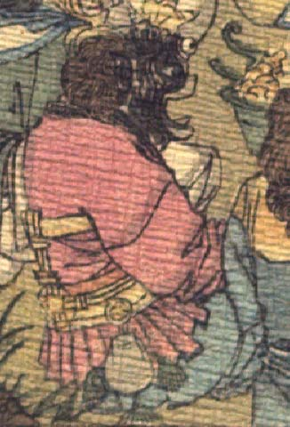

黒い頭の鬼。頭部は毛むくじゃらのように見え、獣を思わせる。目玉が飛び出ており、唇は分厚い。口を開けて、笑っているように見える。異国風の赤い上着と青い股引を着て、座っている。
著作者：J.Dautremer／出典：親書誌：U426_nichibunken_0123：Le vieillard et les démons／日付：2006／資源識別子：U426_nichibunken_0123_0003_0008
Copyright (c)2010- International Research Center for Japanese Studies, Kyoto, Japan. All rights reserved.